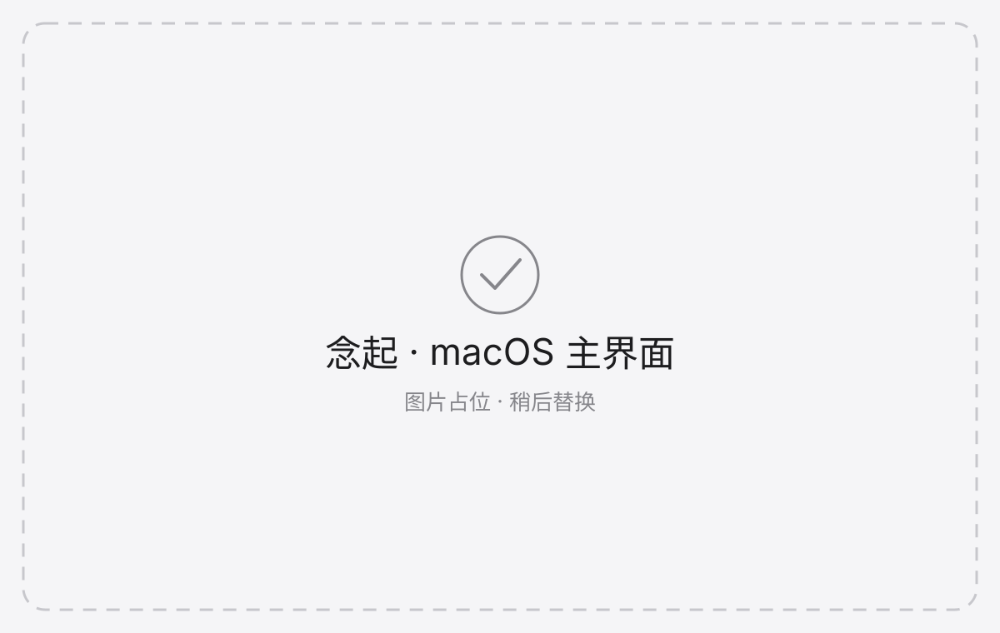
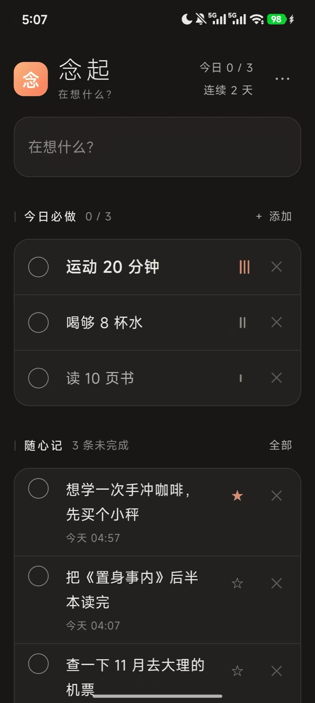
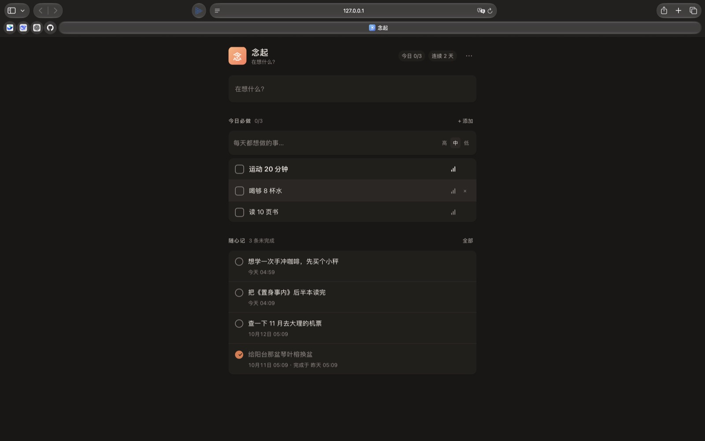

01
念起 nianqi
跨端个人记录应用 · macOS 原生 / Android / Web
手机优先的「今日必做 + 随心记」双区记录工具。同一份数据契约覆盖三个端， 刻意不做账号、云同步、协作与提醒推送 —— 纯本地、零第三方依赖、零运行时权限。
设计理念
- 按心理契约分区，不按功能分区：「今日必做」和「随心记」是两种心理契约， 是两个永不合并的独立区域 —— 有承诺的事给成就感（打卡、连续天数）， 无承诺的事给零压力（禁止任何统计）。把两者的统计混在一起，会同时破坏两边。
- 绝不使用负面信号：13 项否决清单里最核心的一条。逾期不标红、不做红点与负面计数、 断签不清零（最长连续永久保留）、习惯只停用不删除。因为负面反馈是「做了反而更差」的功能 —— 压力会杀死打开欲。
- 录入路径是唯一用秒数衡量的指标：从想到到记下 ≤ 3 秒。打开即聚焦光标、 顶部只有一个主输入框、Enter 即存、保存后保持聚焦可连续录入；明令禁止保存 toast、音效、 模态确认框与强制选择分类。唯一的反馈是新条目就地插入（≤180ms）。
- 审美是一等功能需求，但必须可验收：字号只有 4 档、字重只有 2 档、 每套主题颜色 token ≤10、动效 120–200ms；8 个主题/模式组合的对比度全部要过 4.5:1， 触控命中区 ≥44×44。
- 数据属于用户：导出是单文件全量 JSON（含墓碑记录）并带 schema 版本； 导入是合并而不是覆盖，只有本地侧有的必须保留；版本高于应用支持的 schema 直接拒绝， 绝不「尽力而为」地导入。
-
把 macOS 客户端完整重写为纯 SwiftUI 原生应用：20 个 Swift 文件、4741 行，
无 Xcode 工程、无 SwiftPM、无第三方包，用裸
swiftc构建出 2.5 MB 的 .app； 实现⌥Space全局速记、菜单栏常驻、开机自启、运行时切换 Dock 图标， 并与 Web 版共用同一份nianqi.json数据文件，来回切换不丢数据。 -
设计
--selftest自检协议：把数据契约、8 组主题解析、 5 个图标变体的绘制像素、存档往返、合并语义、原生能力与渲染路径，全部变成可复跑的断言。 -
定位并修复「自检自身失效」的隐蔽缺陷：初版用
ImageRenderer渲染ScrollView只得到纯背景图，而「不透明像素」指标在铺满底色的视图上恒等于采样点数 76200， 空白图被判为正常。改走NSHostingView + cacheDisplay自渲染路径，度量换成 「颜色数 + 非背景像素占比」后，同一条视图从 1 种颜色恢复到 1027 种 / 内容占比 41.3%， 并新增渲染路径回归守卫。 -
在 Google Maven 超时不可用的机器上绕过 Gradle / AGP，手工串起
aapt2 → javac → d8 → zipalign → apksigner六步流水线，产出 50468 字节、 零运行时权限的 Android 16（targetSdk 36）应用，构建零网络依赖、可复现。 -
靠模拟器端到端验证抓出 5 个缺陷并修复：Android 13+ 预测式返回改用
OnBackInvokedCallback；系统栏 insets 在页面就绪前派发导致的时序竞态； 分享内容被静默丢弃；勾选圆触控命中区从 24px 修正为 44px；墨主题说明文字对比度从 2.78:1 提亮到 4.51:1。 - 建立三层 CDP 自动化验证，共 78 项断言（功能 37 / 视觉 22 / 端到端 19）， 并用 CDP 沿 DOM 逐层合成含 alpha 的背景色做 WCAG 对比度审计，驱动设计级修复， 正文对比度从 3.64 提升到 9.74。
4741 行Swift 源码
2.5 MB.app 产物
50468 字节APK 产物
78 项自动化断言
3.64 → 9.74正文对比度
零权限 · 零依赖纯本地运行


